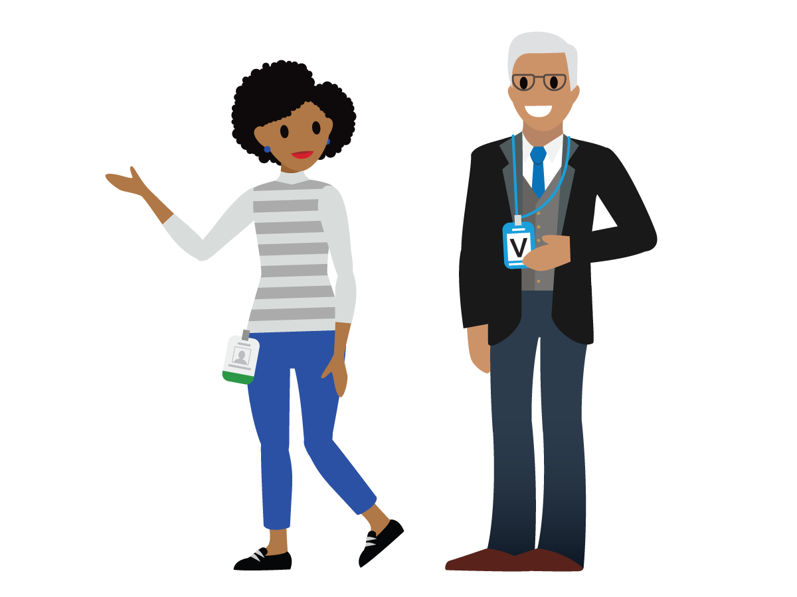
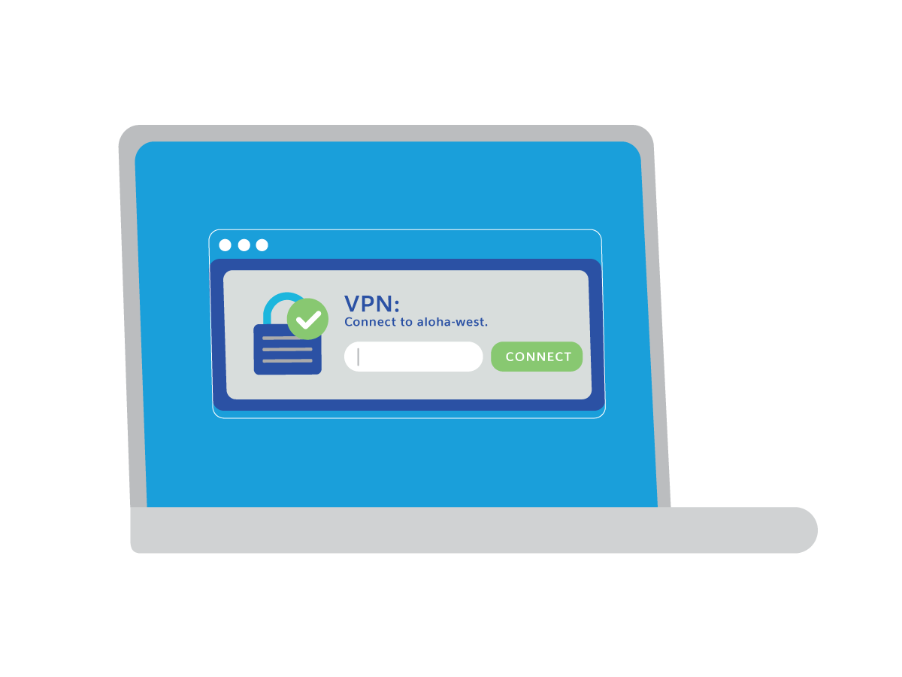

After completing this unit, you’ll be able to:
We’ve reviewed the importance of securing data, let’s switch gears to talk about physical security matters.
Data Center Security
If you have physical access to our data centers, here are a few security best practices to follow.
Escorting Visitors
We’ve covered managing access to information and data. It’s also important that we prevent unauthorized physical access to our Salesforce floors and our data centers. If you get visitors at work, make sure that they check in at the receptionist desk to get their visitor badge, and escort them at all times while they’re on site.

Say No to Badge Surfing
Badge surfing or tailgating is when someone follows you into the office without a badge. It’s a problem that compromises both our physical and information security, and it’s prohibited at Salesforce. Badge surfing may not seem like a big deal, but it can compromise the integrity of our company and our systems.
Let’s think of it this way. You wouldn’t let a random person walk through your home, right? Then why would you let a random person walk through our offices? Our offices require badge entry to prevent physical break-ins and potential risks to our networks. If we allow someone to badge surf, we open ourselves up to the possibility of someone infiltrating our networks, endangering our company, our customers’ data, our employees, and our jobs. We want to keep Salesforce safe, so next time you see someone badge surf, speak up and kindly ask them to scan their badge. Any Salesforce employee, especially if it’s your friend or regular coworker, should understand. Asking others to badge in is a sign of respect for our company and our work.
When in the office, you must wear your badge at all times. Also, you must badge in every time you enter or advance past a badge reader.
If someone tries to follow you into the office:
Keeping Laptops Secure
There are a few things you can do day to day to keep your laptop secure. First of all, always maintain possession of your laptop. Second, always lock your screen when you walk away. Also, be aware of passersby who might try to view unauthorized information on your laptop. You can use a privacy filter for this purpose that makes it hard to see from side angles. You can request a privacy filter for your laptop here. If you decide to leave your laptop at work when you head home, make sure it’s in a locked cabinet.
Remember that your Salesforce computer and the Salesforce network are for your business use. Keep personal use of company hardware and networks to a minimum. Only Salesforce computers or IT-approved mobile devices can connect to the company’s network either directly or through VPN. Also, be sure to use only Salesforce approved software. If you need to use other software, make a request by logging a ticket in Concierge.

When you are outside the office, it is a best practice to use a VPN connection. Avoid using untrusted public Wi-Fi connections and networks especially when traveling in airports, hotels, or at cafes. Using these networks introduces the possibility of a man-in-the-middle attack, or ways for attackers to steal your credentials and session data. Attackers also target production equipment (such as backup disks and hard drives that contain customer data), so never use systems with access to production equipment for personal use.
BYOD Equipment Rules
Bring your own device (BYOD) is not allowed in Government Cloud environments. For more information, contact the IT department and refer to the Global Mobile Communication Policy.
Physical Security While Traveling
Whenever you travel outside the US, don’t take any systems that have credentials to access the Government Cloud. In addition to the threat of losing your laptop, there have been reports of international governments sponsoring targeted attacks on traveling business people. These attacks are focused on gaining access to travelers’ laptops while left unattended in hotel rooms or while in transit during customs immigration. In general, it’s a good practice to never leave your work laptops or cell phones unattended, as it can create an opportunity for someone to install a keystroke logger on the device. Also, make it a point to never leave devices in plain sight in unattended vehicles.
If you need a device while traveling, you can request a loaner laptop or cell phone by logging a ticket in Concierge. Remember: When traveling outside of the US, don’t access government-related systems with remote login.
You are the strongest link in our security efforts at Salesforce, and this training ensures that you have the knowledge to protect and safeguard our Ohana. As US public sector employees, we are entrusted with very sensitive customer data. It’s up to us to keep our customers’ trust by being compliant and vigilant in our efforts to stay secure. Don’t forget, if you see something, say something by emailing security_gov@salesforce.com.